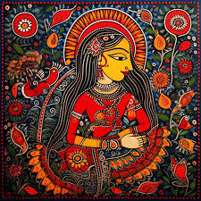
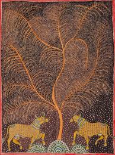
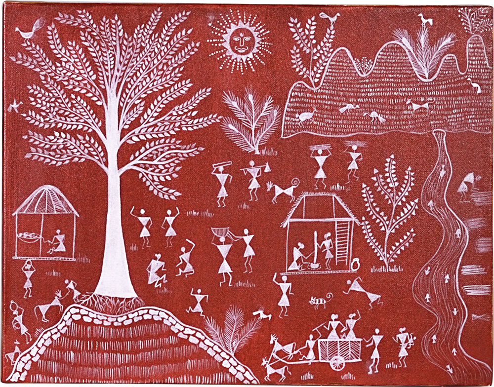

Featured Artworks
|

Madhubani Art Madhubani Art is a traditional Indian folk art from Bihar, known for intricate patterns, vibrant colors, and depictions of nature, deities, and Hindu mythology. It features detailed line work and the use of natural dyes. |
Mithila Art Mithila Art is a traditional folk art form from the Mithila region of Bihar. Known for its vibrant colors and intricate patterns, it depicts mythology, nature, and daily life, often using natural dyes and pigments. |
Rajasthani Miniature Painting Rajasthani Miniature Painting is an intricate art form from Rajasthan, featuring vibrant depictions of royal life, battles, and religious themes. The paintings are known for their detailed brushwork, rich colors, and use of gold. |
|

Mata Ni Pachedi Mata Ni Pachedi is a traditional textile art from Gujarat, featuring various forms of the goddess Mata. This art form, often created on cloth, depicts intricate designs and symbols from Hindu mythology and is used for devotional purposes. |
Pichwai Painting Pichwai Painting is a traditional art form from Rajasthan, depicting scenes from Lord Krishna’s life. These vibrant paintings are often created on cloth and adorn temples during festivals, showcasing Krishna's devotion to the cowherd community. |

Warli Painting Warli Painting is a traditional tribal art from Maharashtra, using simple geometric shapes like circles and triangles to depict nature, animals, and daily life. The paintings are created with white pigment on mud walls, symbolizing harmony with nature and community life. |